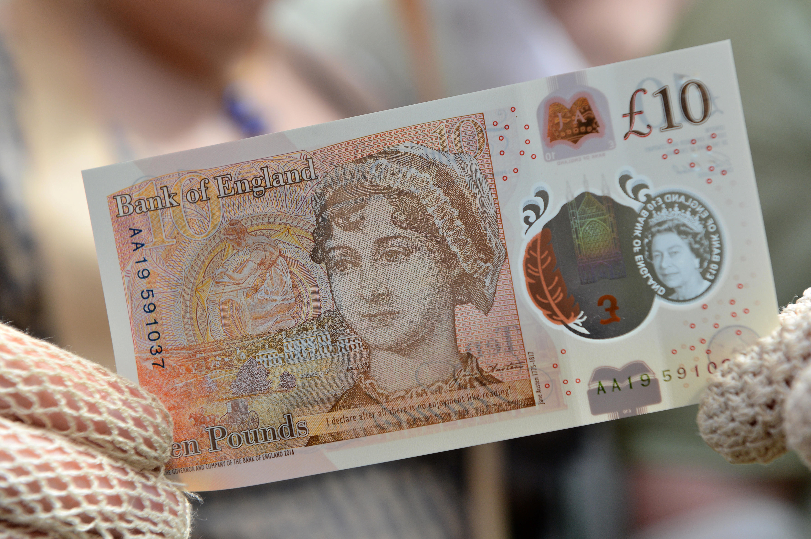

Jane Austen

, watercolor")
It is a truth universally acknowledged that a reader in possession of good taste, must love Jane Austen.
 |
One would be hard pressed to find another female author whose work has had such a major impact on literature or screen entertainment to date. Countless authors have taken inspiration from Austen's works and made them their own. She was the first to write a novel about ordinary people living their day to day life. Her works have been reworked in fantasy, mystery, romance, anime...essentially if there's a genre out there there's likely to be work inspired by Austen available. |
 |
In addition to literary works inspired by Jane Austen, there has been a multitude of screen adaptations of her books, stories inspired by her books, and the story of Jane Austen herself. These movies and shows help keep the characters alive in our imaginations and hearts. Bringing Jane Austen's work to the screen helps introduce many people to her that may never have thought to pick up her books before. |
Not only are Austen's books a work of art, but they can also teach the reader some valuable life lessons
if the reader pays attention. There is a book called A Jane Austen Education by William Deresiewicz,
that I highly recommend to any Jane Austen fan who wants a deeper dive into the phycology or her books. Here is what the back cover has to say:
Emma
Pay attention to the everyday things- those little things that happen hour by hour to the people in your life: what your nephew said, what your friend heard, what your neighbor did. That is what the fabric of our years really consists of. That is what life is really about.
~~~~~~~~~~~~~~~~~~~~~~~~~~~~~~~~~~~~~~~~~~~~~~~~~~~~~~~~~~~~~~~~~~~~~~~~~~~~~~~~~~~~~~
Pride and Prejudice
You aren't born perfect. You are born with a whole novel's worth of errors ahead of you. But making mistakes is the only way to grow up. Being right might get you a pat on the head, but being wrong can help you find out who you really are.
~~~~~~~~~~~~~~~~~~~~~~~~~~~~~~~~~~~~~~~~~~~~~~~~~~~~~~~~~~~~~~~~~~~~~~~~~~~~~~~~~~~~~~
Northanger Abbey
Stay awake; don't take things for granted. By renouncing certainty and cynicism, by opening yourself to new experiences, you can turn your life into an adventure that will never end.
~~~~~~~~~~~~~~~~~~~~~~~~~~~~~~~~~~~~~~~~~~~~~~~~~~~~~~~~~~~~~~~~~~~~~~~~~~~~~~~~~~~~~~
Mansfield Park
Being entertained is not the same as being happy. Perpetual amusement leads only to the perpetual threat of boredom. The keys to true happiness lie elsewhere.
~~~~~~~~~~~~~~~~~~~~~~~~~~~~~~~~~~~~~~~~~~~~~~~~~~~~~~~~~~~~~~~~~~~~~~~~~~~~~~~~~~~~~~
Persuasion
Be honest with your friends. Unconditional acceptance is not real friendship. A true friend wants you to be happy, but being happy and felling good about yourself are not the same thing. A true friend points out your mistakes- even at the risk of losing your friendship.
~~~~~~~~~~~~~~~~~~~~~~~~~~~~~~~~~~~~~~~~~~~~~~~~~~~~~~~~~~~~~~~~~~~~~~~~~~~~~~~~~~~~~~
Sense and Sensibility
Love is about growing up, not staying young. It means a never-ending clash of opinions and perspectives. A true lover is someone who is different from you and willing to challenge you. If your lover is already just like you, then neither one of you has anywhere to go.
~~~~~~~~~~~~~~~~~~~~~~~~~~~~~~~~~~~~~~~~~~~~~~~~~~~~~~~~~~~~~~~~~~~~~~~~~~~~~~~~~~~~~~
You can see more about his book or purchase it HERE.
| Jane Austen is the first female author to appear on British Currency, replacing Charles Darwin on the 10 Pound Note as of 2017. |  |
 |
Pride and Prejudice is believed to be the first of the 'Enemy-to-Lovers' trope that is now very popular in the literary world. |
| Jane is buried in Winchester Cathedral, one of the largest Cathedral's in Europe. It isn't clear what Austen died of at the age of 41, some believe cancer, others a rare disease, others even believe she was poisoned. |